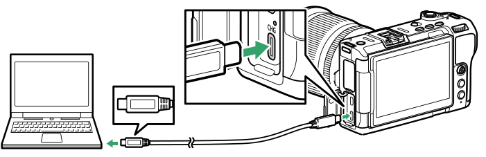
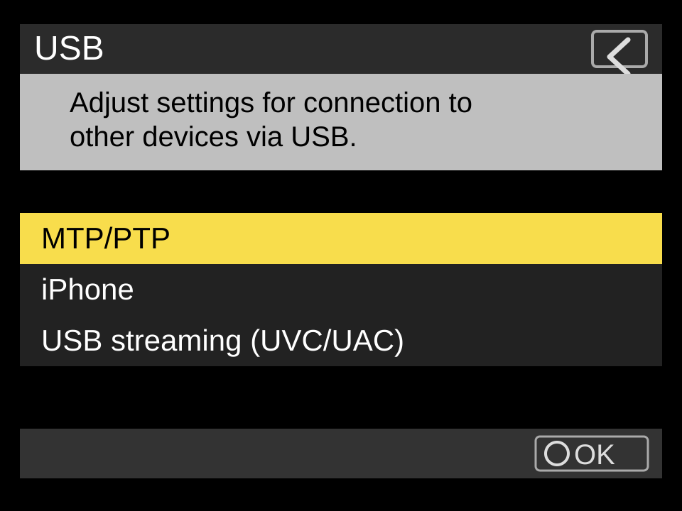

Use MTP/PTP, then connect with a data cable.
USB is the cleanest wired path. The important part is putting the camera in the USB mode ZR Ctl can control, then using a cable that carries data.

-
Set the camera USB mode.
On the ZR, open
Menu > Network menu > USB, then chooseMTP/PTP. -
Avoid the other USB modes for app control.
Do not choose
iPhoneorUSB streaming (UVC/UAC)when you want ZR Ctl camera control. Those modes are for other workflows. -
Protect the phone battery if needed.
To avoid the camera pulling power from the iPhone over USB-C, set
Setup menu > USB power delivery > OFF. Keep USB itself set to MTP/PTP. -
Connect with a USB-C data cable.
Use a cable that supports data. A charge-only cable can power the camera without exposing it to iOS or Android as a controllable camera.
-
Dismiss camera import screens.
If the camera shows an upload-priority screen, half-press the shutter to exit. If the phone opens Photos, Files, or an import view, back out and return to ZR Ctl.
-
Connect from ZR Ctl.
Open Connection and tap
USB / Cable. On iPhone or iPad, allow Camera permission if iOS asks.
Nikon camera screens
